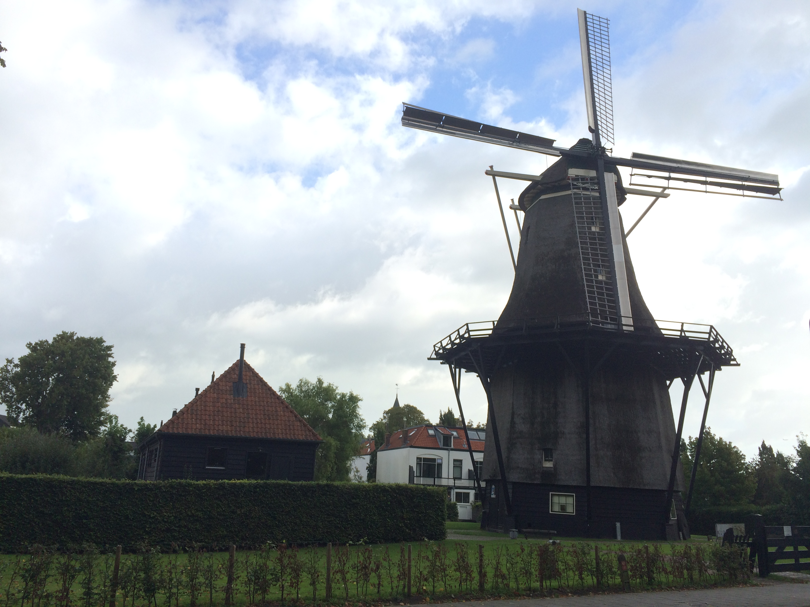
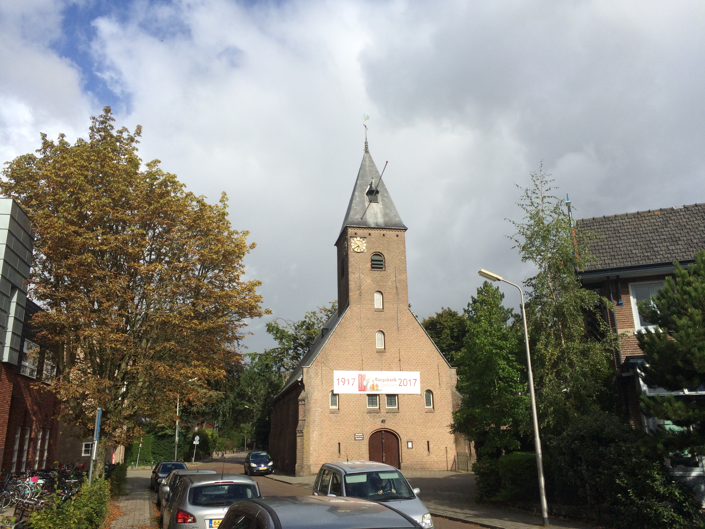
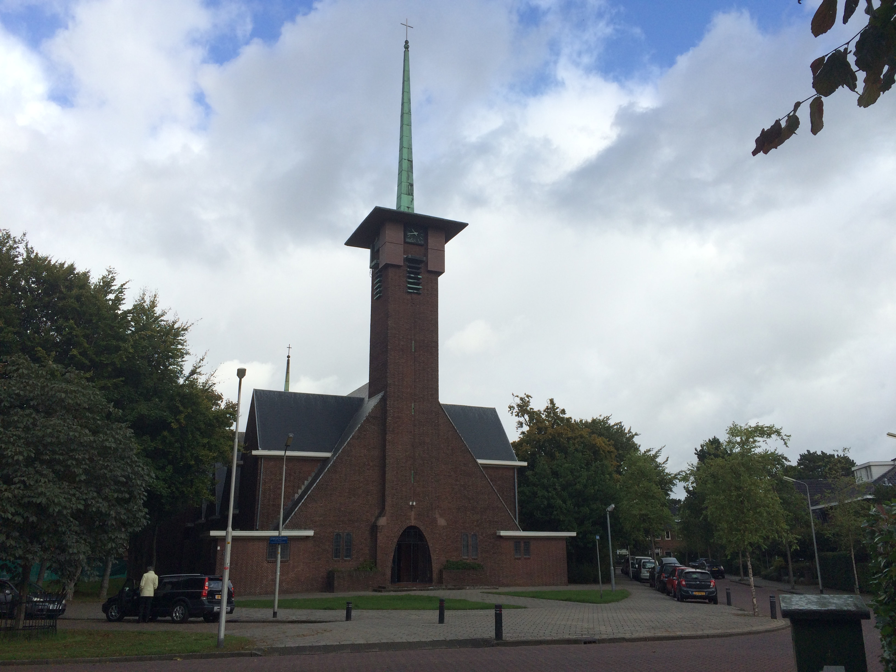
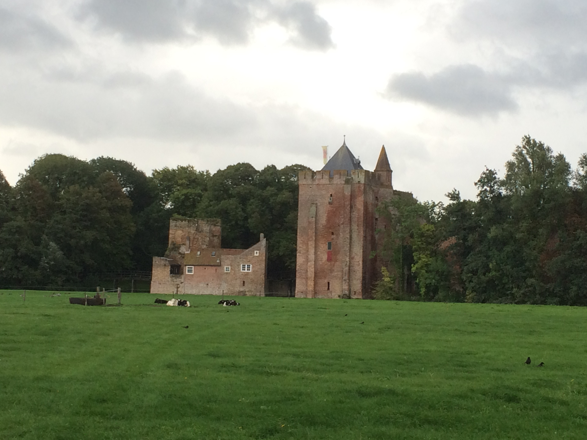

Bezienswaardigheden
In de omgeving van Santpoort-Noord zijn er veel verschillende bezienswaardigheden te vinden. Hieronder vindt u een overzicht van alle bezienswaardigheden die zich in Santpoort-Noord bevinden.
Korenmolen de Zandhaas
De Zandhaas is een typische ouderwetse korenmolen gebouwd in 1779. In het winkeltje op de begane grond vindt je alle benodigdheden voor het maken van verschillende soorten broden en andere meel- en graansoorten om bijvoorbeeld cake en pannenkoeken te bakken. Hiernaast kunt u er ook terecht voor andere lokale delicatessen. Daarnaast kunt u ook een rondleiding krijgen in de molen door de molenaar. De winkel is geopent van donderdag tot en met zaterdag van 10:00 tot 17:00 uur.
Protestantse Dorpkerk
De dorpskerk is een protestantse kerk gelegen aan de Fazantenlaan 3 en is heropbouwd in 1917. In 1917 is de kerk helemaal afgebrand maar is daarna weer in hetzelfde jaar opnieuw herbouwd. De kerk is zo goed als altijd open en is een echte aanrader om een keer van binnen te bekijken, door de statige classicistische bouw stijl.
De Naaldkerk
De naaldkerk is een katholieke kerk en is gebouwd in 1932. De naam: “naaldkerk” heeft de kerk te danken aan het feit dat de toren van de kerk in de vorm van een scherpe punt (naald) bovenop staat. De kerk is zeker een bezoekje waard, u zult onder de indruk zijn van de warme en welkome sfeer die er hier hangt. U kunt zelfs, als u dit vraagt, boven bij het orgel een kijkje nemen. De kerkdeuren openen iedere vrijdagochtend van 9:30 tot 11:30 uur. Daarnaast is het parochiecentrum van maandag tot en met vrijdag open van 9:30 tot 11:30 uur.
Ruïne van Brederode
De Ruïne van Brederode zijn restanten van het oude kasteel van Brederode. Het kasteel is gesticht in de tweede helft van de 13e eeuw door Willem I van Brederode (1228-1285). De ruïne is geopend op woensdag & vrijdag van 12:00 tot 17:00 uur. In het weekend zijn ze open van 10:00 tot 17:00 uur. De entreeprijzen zijn vanaf 12 jaar €5, kinderen van 4 t/m 11 jaar €3 en iedereen die jonger is dan 3 jaar heeft gratis entree. Honden zijn toegestaan, mits ze zijn aangelijnd.